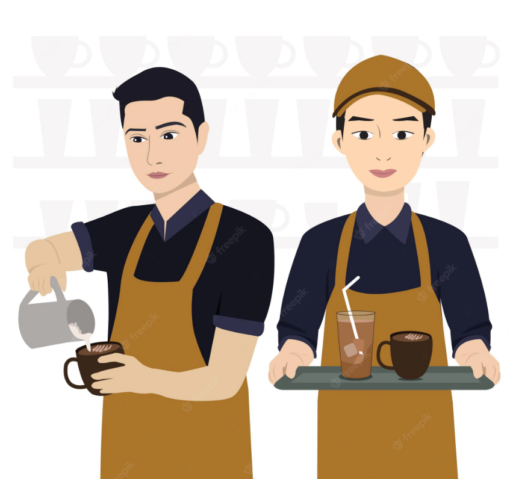

Nhiza's Cafe is a new and exciting eatery that focuses on
crafted nourishment; care is taken in preparation and ingredients
for a world-centric menu. Salads, bowls, wraps, coffee, breakfast bites,
crafted drinks, bubble tea, sweet treats, and more are available.
a bite for every occasion
A café that commemorates the beauty of our natural surroundings and the
richness of our multicultural diversity - great care has been taken to
bring you unique options; artisan choices crafted for you Enjoy a bite,
a refreshing drink, or both here at the café, as you stroll through our naturally
beautiful surroundings, to-go as you hit the ball fields, a movie or the philharmonic at
Cunningham Park, local beaches, other daytrips, or just at home.
MENU
CAFE
BAKERY
MILK TEA
SWEETS
OTHER
Ice Americano
Cafe Latte
Macchiato
Espresso
Capuccino
Iee Coffee
Latte
-----
Bread
Doughnut
Mango Pie
Croissant
Bagels
Sticky Cinnamon Bun
Pastries
-----
Wintermelon
Taiwan Classic Bubble Tea
Strawberry Tea
Matcha Milk Tea
Brown Sugar Milk Tea
Cookies and Cream
White Peach Tea Macchiato
■ I like the atmosphere, the coffee, and the decor. This is a great place to
study or hang out with friends. All of the drinks and foods were delicious and worthwhile.
If you're looking for a new place with beautiful architecture, this is a must-see.
■ This place is incredible! They served the best coffee and had the best
attitude toward their customers. The internet connection is both fast and unlimited.
This location is ideal for both studying and relaxing. It was air-conditioned and very quiet.
I just want to keep returning to this place. Thank you very much!
■ Will return. I only came in to get some take-out cappuccinos, but I was impressed by how friendly the staff was.
The cappuccinos were also delicious! And very reasonably priced.
■ This coffee shop, in my opinion, is a must-visit for coffee enthusiasts! The service was
excellent, and the variety of coffee served in the ambiance was delicious.
If you enjoy coffee shops, this is a must-see! We intend to return!
JOBS & SERVICES
OUR SERVICES
Similar to a fast food or quick service restaurant, our cafe shops have
a focused menu displayed above the counter, and primarily serve coffee and
espresso-based drinks, along with a small selection of snacks or pastries

HIRING FOR FOUR (4) PEOPLE
⚫ Two (2) Server
⚫ Two (2) Barista
GALLERY
This Shows a sample of Coffee & Foodies Nhiza`s Cafe have:
Coffee
Milktea
Latte
and Pastries
MELODY
Soothing melody while browsing
The music you playing in our cafe shop is another important factor in getting your mood chill and relax while waiting to the order. This music can help to relax you in the time of waiting and browsing.
Think about happy thoughts and enjor your Coffee!
~~~ Cafe Melody ~~~
CONTACT
Location: Tanay Town Center F. T. Catapusan, cor Sampalucan Rd, Tanay, 1980 Rizal